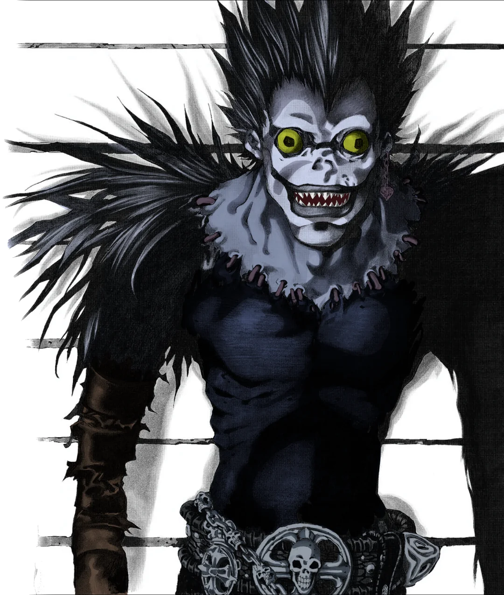
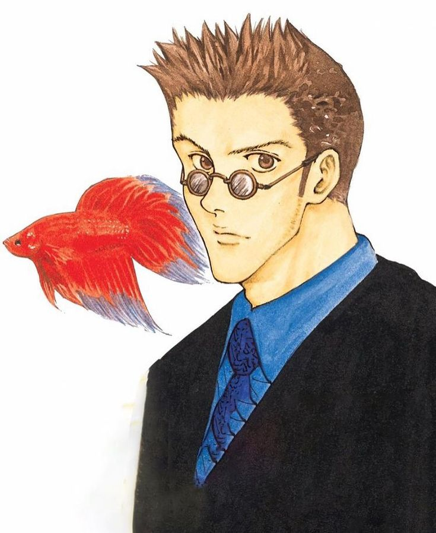
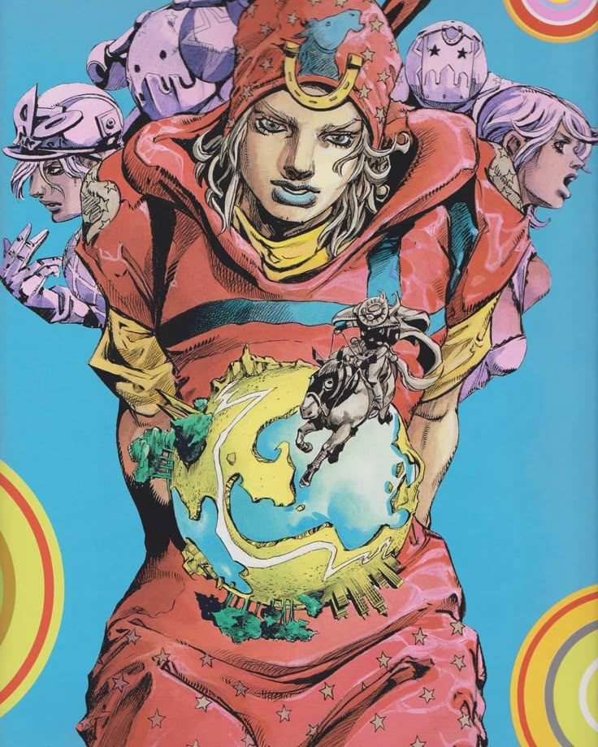
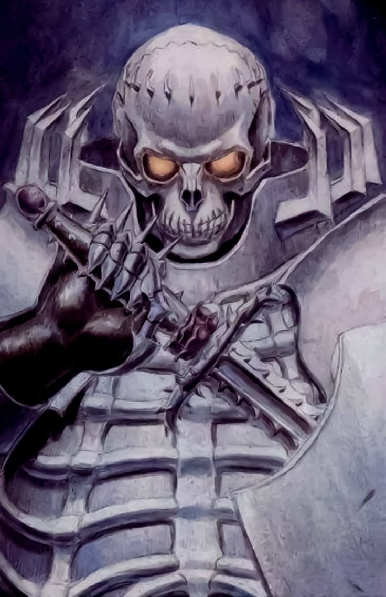
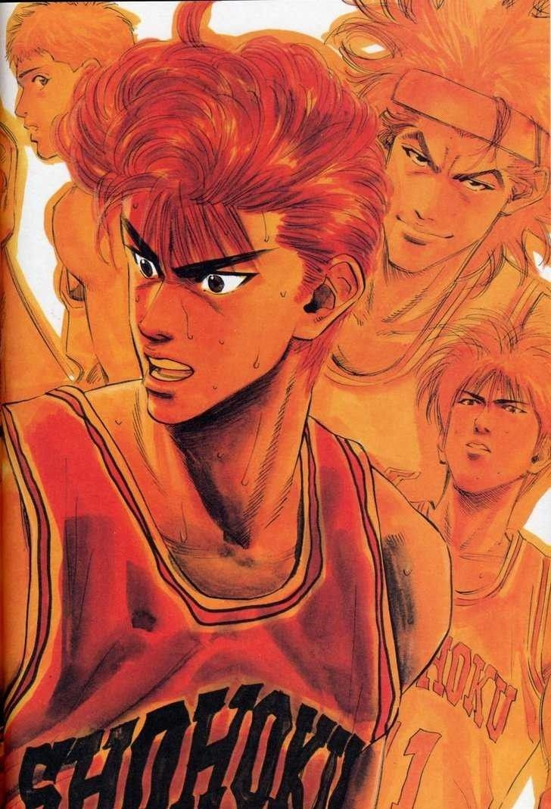

Death Note media, except for video games and soundtracks, is licensed and released in North America by Viz Media. The episodes from the anime first appeared in North America as downloadable from IGN before Viz Media licensed it. The series was aired on YTV's Bionix programming block in Canada and on Adult Swim in the United States with a DVD release following
Did you know that...
In some countries, Death Note was banned in schools after students made fake "Death Notes" and wrote classmates' names in them, raising concerns about violence and dark themes.

Heroes:
Ryuk
A Shinigami who grows bored with the Shinigami Realm and drops his Death Note into the human world just to see what will happen.
He enjoys observing the chaos caused by Light and often makes sarcastic or darkly humorous comments about the situation.
Ryuk doesn’t interfere with Light’s plans or help him, only acting when he’s curious or when his own needs (like apples) are involved.
His neutral role emphasizes the idea that Shinigami are above human concerns, seeing life and death as entertainment.
In the end, Ryuk fulfills his promise to write Light’s name in the Death Note when Light’s time is up.

Light Yagami
A brilliant and ambitious high school student who becomes disillusioned with the world’s corruption and crime.
After discovering the Death Note, he decides to use it to eliminate criminals and create a new world where he rules as a god.
He uses the alias Kira to hide his identity and outsmart the police, including the genius detective L.
Though he begins with seemingly noble goals, Light becomes increasingly manipulative, arrogant, and willing to sacrifice anyone—including his own family—to maintain his power.
His duality as both a hero (in his mind) and a villain (to others) is one of the central themes of the story.
L (L Lawliet)
The world’s greatest detective, known for his strange behavior, brilliant deductive reasoning, and love of sweets.
He hides his identity behind a letter, rarely shows his face, and uses aliases and proxies to protect himself from Kira.
Despite his odd mannerisms, he is extremely focused and intelligent, quickly suspecting Light as Kira and even placing himself close to him by joining the investigation team.
L's psychological battle with Light forms the intense core of the first half of the series, filled with mind games, traps, and philosophical conflict.
L deeply values truth and justice, and his death marks a major turning point in the story.
.png)
Misa Amane
Misa is a famous model and actress who becomes emotionally attached to Kira after he punishes the man who murdered her parents.
She receives a Death Note from the Shinigami Rem and becomes the Second Kira, acting as Light’s ally and romantic partner.
Misa is bubbly, cheerful, and impulsive, but also deeply devoted to Light, often putting herself at great risk to help him.
Her Shinigami Eyes allow her to see people’s real names just by looking at their faces, which makes her a valuable asset to Light.
Despite her loyalty, Light manipulates her emotions for his own gain, never truly returning her love.
A few words about the author:
Tsugumi Ohba
Tsugumi Ohba is the mysterious writer behind Death Note. Very little is known about their personal life, and their real identity has never been confirmed. Some fans even believe that "Tsugumi Ohba" is a pen name. Despite the secrecy, Ohba is known for creating intelligent and thought-provoking stories.
Takeshi Obata
Takeshi Obata is a famous Japanese manga artist, best known as the illustrator of Death Note.
He is admired for his clean, detailed, and expressive art style. Obata has worked on many popular manga series, including Hikaru no Go, Bakuman, and Platinum End. He often collaborates with talented writers like Tsugumi Ohba. His artwork plays a big role in bringing complex characters and dramatic scenes to life.
Anime Adaptation:
Death Note adaptation
The Death Note anime adaptation was released in 2006 and produced by Madhouse, a well-known Japanese animation studio.
The series has 37 episodes and closely follows the story of the original manga. It features high-quality animation, intense music, and strong voice acting that bring the psychological battles between Light Yagami and L to life.
The anime became very popular worldwide and is often praised for its dark atmosphere, smart storytelling, and memorable characters. It helped make Death Note one of the most iconic anime series of all time.

12.Great Teacher Onizuka
Status: Complete
"Class 2-C, idiot."
Great Teacher Onizuka (グレートティーチャー鬼塚) , officially abbreviated as GTO, is a Japanese manga series written and illustrated by Tooru Fujisawa. It was originally serialized in Kodansha's shōnen manga magazine Weekly Shōnen Magazine from January 1997 to February 2002, with its chapters collected in 25 tankōbon volumes. The story focuses on 22-year-old ex-bōsōzoku member Eikichi Onizuka, who becomes a teacher at a private middle school, Holy Forest Academy, in Tokyo, Japan. It is a standalone sequel to Fujisawa's earlier manga series Shonan Junai Gumi and Bad Company, both of which focus on the life of Onizuka before becoming a teacher.
Did you know that...
Eikichi Onizuka, the main character of GTO, is actually based on a real stereotype in Japanese culture — the "Yankī" (ヤンキー), or delinquent youth. His look, attitude, and background as a former biker gang member reflect this rebellious archetype.
But what’s fascinating is that despite being rough, loud, and unorthodox, Onizuka ends up becoming one of the most caring, clever, and impactful teachers his students have ever had — flipping the stereotype on its head!
Heroes:
Eikichi Onizuka
A 22-year-old former biker gang leader (and a virgin) who decides to become a teacher to meet high school girls—but ends up becoming a true role model.
Despite his crude behavior, immaturity, and love of dirty jokes, Onizuka genuinely cares for his students and often risks his career and safety to help them.
His unorthodox teaching methods—ranging from wild stunts to deep emotional support—help students deal with serious issues like bullying, suicide, depression, abuse, and isolation.
Over time, he earns the loyalty and admiration of even the most troubled students, showing them that not all adults are fake or corrupt.

Azusa Fuyutsuki
A young, compassionate teacher and one of the few staff members who supports Onizuka from the beginning.
She’s calm, intelligent, and gentle, acting as a stabilizing influence around Onizuka’s chaotic presence.
Although she’s often embarrassed or frustrated by his behavior, she gradually sees his sincerity and develops romantic feelings for him (though it remains subtle and unresolved).
Her own backstory shows the pressure women face in the teaching profession, and she often defends her students’ emotional well-being.
Hiroshi Uchiyamada
Uchiyamada is the conservative and self-important vice principal of the school who sees Onizuka as a threat to discipline and tradition.
He is obsessed with two things: maintaining order and his beloved Toyota Cresta (which Onizuka often destroys).
He constantly tries to get Onizuka fired but ends up being humiliated over and over again.
Despite being the “antagonist,” Uchiyamada is also a symbol of the rigid, outdated education system—and occasionally shows a human side full of stress, pressure, and insecurity.
Urumi Kanzaki
Urumi is a gifted student with a genius-level IQ and a dangerously manipulative personality.
Her deep hatred of adults stems from a traumatic betrayal by a teacher and neglect from her mother.
She enjoys toying with people and has a cruel side—but underneath is a lonely girl desperate for someone she can trust.
Onizuka gains her trust through raw honesty and by standing up to her without fear, becoming one of the few people she truly respects.
A few words about the author:
Tōru Fujisawa
Tōru Fujisawa is a Japanese manga artist, born in 1967 in Hokkaido. He’s best known for creating Great Teacher Onizuka (GTO), a hit series about a former gangster who becomes an unorthodox but inspiring teacher.
Before GTO, he wrote Shōnan Junai Gumi, which tells the story of Onizuka’s youth. His manga often mix comedy, drama, and social themes, focusing on rebellious characters and school life.
He also created series like Tokko and GTO: Paradise Lost (a sequel to GTO).

Anime Adaptation:
GTO Anime adaptation
The Great Teacher Onizuka anime, based on the manga by Tōru Fujisawa, aired from 1999 to 2000 and has 43 episodes. Produced by Studio Pierrot, it follows Eikichi Onizuka, a 22-year-old ex-gang member who becomes a high school teacher. Although rude and immature, Onizuka is deeply committed to helping his troubled students in unconventional but effective ways.
The anime blends comedy, drama, and real-life issues, making it both entertaining and emotional. While it stays close to the manga's spirit, some arcs were changed or omitted. Interestingly, a live-action version of GTO aired in 1998, even before the anime. GTO remains a classic among school-life and coming-of-age anime series.
11.Parasyte
Status: Complete

"Humans are the only animals that don't sleep when tired and eat when not hungry"
Parasyte (寄生獣) is a Japanese science fiction horror manga series written and illustrated by Hitoshi Iwaaki. It was published in Kodansha's Morning Open Zōkan (1989) and Monthly Afternoon (1989 to 1994).The manga was published in North America first by Tokyopop, then Del Rey, and finally Kodansha USA. The series follows Shinichi Izumi, a high school senior who is the victim of a failed attempt by a parasitic organism to take over his brain.
Did you know that...
In Parasyte, the main character Shinichi originally loses his right hand to the alien parasite Migi—but in the original manga, the story was created in the late 1980s, long before body-horror themes became more mainstream in anime. Despite its age, Parasyte inspired many modern sci-fi horror series and even got a live-action film adaptation and a 2014 anime reboot, nearly 25 years after the manga ended!

Heroes:
Shinichi Izumi
Shinichi is the teenage protagonist of Parasyte — an ordinary high school student whose life changes when a parasite tries to enter his brain, but fails and ends up in his right hand instead.
As a result, Shinichi remains human, but his body becomes partially merged with the parasite, giving him enhanced strength, reflexes, and senses.
Throughout the story, he struggles with his identity and humanity as he gradually becomes more cold and logical, blurring the line between man and monster.
His internal conflict and growth are central to the story’s philosophical themes.
Migi
Migi is the parasite that inhabits Shinichi's right hand. Unlike other parasites that take over the brain, Migi was forced to adapt to live in the arm, making him fully conscious and independent from Shinichi.
He is highly intelligent, logical, and emotionless, driven solely by survival.
Over time, Migi and Shinichi form an unusual partnership, with Migi protecting Shinichi’s life because it ensures his own survival.
As the series progresses, Migi slowly begins to understand human emotions, showing signs of empathy and curiosity about humanity.
Satomi Murano
Satomi is Shinichi’s kind-hearted classmate and love interest.
She represents his emotional anchor and serves as a mirror to show how much Shinichi has changed.
At first, she doesn’t understand his sudden personality shift, feeling hurt and afraid of the new, colder Shinichi.
However, as the story progresses, she realizes that Shinichi is still himself deep inside, and her steady, patient support plays a crucial role in helping him stay connected to his human side.
Ryoko Tamiya (Reiko Tamura)
Ryoko is a highly intelligent parasite who fully takes over a human woman’s body and later becomes a biology teacher.
Unlike most parasites, she is calm, thoughtful, and curious about the nature of humans and life itself.
She performs scientific experiments to understand human behavior and reproduction and later gives birth to a human child—an event that deeply affects her.
Her transformation from a cold killer to a mother willing to sacrifice herself for her baby represents one of the most profound character arcs in the story.
Her philosophical dialogues and eventual self-reflection raise powerful questions about evolution, emotion, and identity.
A few words about the author:
Hitoshi Iwaaki
Hitoshi Iwaaki is a Japanese manga artist born on July 28, 1960. He is best known for creating the sci-fi horror manga Parasyte (Kiseijuu), which ran from 1988 to 1995. The series became a cult hit and gained renewed popularity with its 2014 anime adaptation. Iwaaki is known for blending horror, philosophy, and human psychology in his storytelling. His other works include Historie, a historical manga about the life of Eumenes, a general under Alexander the Great.

Anime Adaptation:
Parasyte -the maxim- (Kiseijuu: Sei no Kakuritsu)
The anime adaptation of Parasyte aired from October 2014 to March 2015. It was produced by Madhouse and directed by Kenichi Shimizu, with music by Ken Arai.
The anime closely follows the original manga, modernizing some elements (like smartphones) to match the 2010s setting. It ran for 24 episodes and was praised for its animation, voice acting, and faithful adaptation of the manga’s psychological and ethical themes.

10.Initial D
Status: Complete

"The One With The Stronger Heart, Always Wins the Battle!"
Initial D (頭文字D) is a Japanese street racing manga series written and illustrated by Shuichi Shigeno. It was serialized in Kodansha's seinen manga magazine Weekly Young Magazine from 1995 to 2013, with the chapters collected into 48 tankōbon volumes.The story focuses on the world of illegal Japanese street racing, where all the action is concentrated in the mountain passes and rarely in cities or urban areas, and with the drifting racing style emphasized in particular.
Did you know that...
The iconic car driven by Takumi Fujiwara in Initial D — the Toyota AE86 Trueno — became a cult legend thanks to the series. In real life, the AE86 was just a modest, lightweight car from the 1980s, but Initial D turned it into one of the most beloved drift cars in the world. Its popularity even boosted sales of tofu in Japan because Takumi's family runs a tofu shop!

Heroes:
Takumi Fujiwara
Takumi is the main protagonist of Initial D. A quiet and laid-back high school student, he unknowingly becomes a street-racing legend.
By delivering tofu every morning for his father's shop using a Toyota AE86 Trueno, he develops extraordinary driving skills — especially on mountain passes (tōge).
At first, Takumi has no interest in racing, but his talent catches the attention of local racers. Over time, he begins to take racing seriously, finding passion, purpose, and confidence in it.
His calm demeanor, instinctive control, and ability to adapt during races make him nearly unbeatable.
Ryosuke Takahashi
A brilliant and ambitious high school student who becomes disillusioned with the world’s corruption and crime.
Ryosuke is the leader of the Akina Speed Stars’ rivals, the RedSuns, and later forms Project D — a team aimed at dominating street racing across Japan.
A brilliant strategist and driver of the Mazda RX-7 FC3S, Ryosuke is calm, intellectual, and always thinking several steps ahead.
He becomes Takumi’s mentor and values his potential, helping him push his limits.
His leadership and planning are key to Project D’s success.
Keisuke Takahashi
Ryosuke’s younger brother, and the more hot-headed and aggressive driver of the Yellow FD3S Mazda RX-7.
Initially overconfident and brash, Keisuke is humbled after losing to Takumi. He later joins Project D and trains hard to improve his technique.
His fiery personality contrasts with Takumi’s cool-headed nature, but he grows into a loyal teammate and a skilled downhill/uphill racer.
A few words about the author:
Shuichi Shigeno
Shuichi Shigeno was born in Matsunoyama , Tokamachi City , Niigata Prefecture. When Shigeno was in high school, he was obsessed with motorcycles, which resulted in one of his best-selling series, Bari Bari Densetsu. Before Shigeno became a manga artist, he was a poor student. Still, after Baribari Densetsu sold well and got a lot of money from royalties on the first edition, he bought his first car (Toyota AE86) and lived in a small apartment.
Anime Adaptation:
Initial D Anime Adaptation
Initial D is a popular anime series based on Shuichi Shigeno's manga about street racing in the mountains of Japan. The first anime adaptation aired in 1998 as a 26-episode series called Initial D First Stage. It was produced by Studio Gallop and focused on the early racing career of Takumi Fujiwara, a talented teenage driver.
The series continued with several sequels and movies, including Second Stage (1999-2000), Third Stage (2001 movie), Fourth Stage (2004-2006), and Fifth Stage (2012-2013). The anime is famous for its intense racing scenes, detailed car models, and iconic Eurobeat soundtrack that perfectly matches the high-energy races.
Initial D helped popularize drifting culture worldwide and remains a cult classic among racing and anime fans.

9.Hunter × Hunter
Status: Ongoing

"Something more important than the thing you're hunting could be right there by the side of the road."
Hunter × Hunter (ハンター×ハンター) is a manga by Yoshihiro Togashi. The manga has been published since March 8, 1998 in Weekly Shonen Jump magazine, although since 2006 the publication has been frequently interrupted for long periods. As of September 2024, 400 chapters and 38 volumes have been published. The manga was on hiatus for a long time; chapter 390 was published on November 26, 2018.
Did you know that...
Since 2006, Yoshihiro Togashi has repeatedly put the series on hiatus due to health issues. Fans often joke that a new chapter is “due” every autumn—but Togashi works at his own pace.

Heroes:
Gon Freecss
Gon is a cheerful and energetic boy who sets out on a journey to become a professional Hunter in order to find his father, Ging.
He begins as a wide-eyed idealist, full of wonder and kindness. However, as the story progresses, he experiences emotional trauma and moral conflict, particularly during the Chimera Ant arc.
His loyalty to friends (especially Killua) and his drive to improve are unwavering. But beneath his optimism lies a darker side: when pushed, Gon can become emotionally unstable, vengeful, and willing to risk everything.
This complexity makes him one of the most psychologically layered shonen protagonists. His most dramatic moment is when he sacrifices years of his life (and nearly his humanity) to defeat Neferpitou in a fit of grief and rage.
Killua Zoldyck
Born into the world’s most infamous assassin family, Killua was raised to kill — but yearns to live as a normal boy.
He is brilliant, sarcastic, and fiercely loyal to Gon. At first, he’s cynical and detached, but over time he opens up emotionally.
His story arc centers on breaking free from his family’s control, particularly the manipulative hold of his younger brother Illumi.
Killua’s Godspeed (Kanmuru) ability, a Nen technique using lightning, represents both his assassin heritage and his evolution into someone who uses power to protect, not kill.
Later in the story, he shows deep emotional strength by choosing to protect his little sister Alluka, showing his growth as both a person and a brother.

Kurapika
The last survivor of the Kurta Clan, Kurapika is driven by revenge against the Phantom Troupe, who slaughtered his people for their scarlet eyes.
Unlike Gon and Killua, Kurapika is older and more mature — composed, intelligent, and a master strategist.
His Nen ability is highly specialized for fighting Troupe members. He uses chains to bind, restrain, and even kill — but doing so places severe conditions on his own life.
As the story progresses, Kurapika’s pursuit of justice begins to blur into obsession and self-destruction. He sacrifices his health, happiness, and ideals in the name of vengeance.
In the Succession War arc, he becomes a bodyguard and takes a more political, manipulative role, showing his growth from a hunter to a tactician.
Leorio Paradinight
Leorio is the most relatable and grounded member of the main quartet. He joins the Hunter Exam to become a doctor and help those in need.
At first, he seems comic and greedy, but he's fiercely compassionate and has a strong sense of justice.
Although he isn’t a front-line fighter, he eventually learns Nen and even becomes a public figure, gaining respect in the Hunter Association.
His most iconic moment is punching Ging in front of everyone — not just for Gon’s sake, but because someone needed to.
Leorio embodies the idea that you don’t need superpowers to be a hero — you just need a big heart.

A few words about the author:
Yoshihiro Togashi
Togashi is known for his creativity, deep storytelling, and willingness to explore psychological and philosophical themes in shōnen manga. He is married to Naoko Takeuchi, the creator of Sailor Moon. Despite challenges, Togashi remains one of the most respected and influential manga artists of his generation.

Anime Adaptation:
Hunter × Hunter Anime Adaptation - Old 1999
Hunter × Hunter has two major anime adaptations. The first one aired from 1999 to 2001, produced by Nippon Animation, with a total of 62 episodes. This version covers the story from the beginning up to the start of the Greed Island arc. It features classic 90s animation style with a slower pacing and a nostalgic feel. The soundtrack by Toshihiko Sahashi is well-loved, and many longtime fans appreciate this adaptation for its faithful retelling of the early manga chapters.

Hunter × Hunter Anime Adaptation - New 2011
The second adaptation, produced by Madhouse, aired from 2011 to 2014 and consists of 148 episodes. It covers almost the entire manga storyline up to the end of the 13th Hunter Chairman Election arc, including major arcs like the Hunter Exam, Heavens Arena, Greed Island, Chimera Ant, and Election arcs. This version features modern, polished animation with updated character designs and faster pacing. The music, composed by Yoshihisa Hirano and Hideki Taniuchi, adds an atmospheric and intense mood to the series. It is praised for its high-quality animation, faithful storytelling, and strong character development, and is considered by many fans as the definitive Hunter × Hunter adaptation.

8.JoJo's Bizarre Adventure
Status: Ongoing

"I’ve returned from hell, Dio!"
JoJo's Bizarre Adventure (ジョジョの奇妙な冒険) is a Japanese manga series written and illustrated by Hirohiko Araki. It was originally serialized in Shueisha's shōnen manga magazine Weekly Shōnen Jump from 1987 to 2004, and was transferred to the monthly seinen manga magazine Ultra Jump in 2005. The series is divided into a total of nine main story arcs, each following a new protagonist bearing the "JoJo" nickname. JoJo's Bizarre Adventure is the largest ongoing manga series published by Shueisha by number of volumes, with its chapters collected in 136 tankōbon volumes as of December 2024.
Did you know that...
JoJo’s Bizarre Adventure author Hirohiko Araki designed a cover for Vogue magazine and collaborated with Gucci.
Heroes:
Jonathan Joestar (Part 1: Phantom Blood)
- Stand: None (uses Hamon)
- Era: Late 1800s, England
- Main Enemy: Dio Brando
Jonathan is the first JoJo and the true definition of a gentleman. He is kind, brave, and always follows his moral values.
When Dio Brando, his adopted brother, betrays the Joestar family and becomes a vampire, Jonathan trains in Hamon, a technique that channels sunlight energy, to defeat him. His story is tragic and heroic, ending with a self-sacrifice to stop Dio.
Joseph Joestar (Part 2: Battle Tendency)
- Stand: Hermit Purple (appears in Part 3 and 4)
- Era: 1930s (young), 1980s–90s (older)
- Main Enemies: Kars, Esidisi, Wamuu
Joseph is energetic, clever, and loves to joke around, but he's also a genius in battle. He's known for predicting what his enemies will say next. He fights the Pillar Men — ancient beings with god-like strength — and becomes a legendary figure.
As he grows older, he helps his grandson Jotaro in future battles. His creativity makes him one of the fan favorites.
Jotaro Kujo (Part 3: Stardust Crusaders)
- Stand: Star Platinum
- Era: 1980s–2010s
- Main Enemy: Dio
Jotaro is Joseph’s grandson and one of the most iconic JoJos. He starts as a high school delinquent but is actually a heroic and responsible person.
His Stand, Star Platinum, has super strength, speed, and precision — and later gains the power to stop time (Star Platinum: The World). He leads a team of Stand users across the world to defeat DIO and save his mother.
Josuke Higashikata (Part 4: Diamond is Unbreakable)
- Stand: Crazy Diamond
- Era: 1999
- Main Enemy: Yoshikage Kira
Josuke is the illegitimate son of Joseph Joestar, making him Jotaro’s uncle. He’s cheerful, friendly, and very loyal, but also quick-tempered, especially when someone insults his hairstyle.
His Stand, Crazy Diamond, can heal people and fix objects, making him a great ally in battle. He and his friends protect the peaceful town of Morioh from the serial killer Kira.
Giorno Giovanna (Part 5: Golden Wind)
- Stand: None Gold Experience → Gold Experience Requiem
- Era: Early 2000s, Italy
- Main Enemy: Diavolo
Giorno is the son of Dio (who used Jonathan’s body), making him a Joestar by bloodline. Unlike Dio, Giorno wants to use power to help others. His goal is to rise through the ranks of the Italian mafia (Passione) and change it from within.
His Stand evolves into Gold Experience Requiem, which can undo any action, making it nearly invincible. Giorno becomes the new boss of the mafia by the end of his journey.
Jolyne Cujoh (Part 6: Stone Ocean)
- Stand: Stone Free
- Era: 2010s, Florida, USA
- Main Enemy: Enrico Pucci
Jolyne is the daughter of Jotaro Kujo. At the start of the story, she is wrongly imprisoned. Her Stand, Stone Free, allows her to unravel into string, which she uses both for combat and for clever tricks.
As the first female JoJo, Jolyne shows strength, heart, and growth. She fights to stop Father Pucci, who tries to create a new perfect universe using DIO’s will.
Johnny Joestar (Part 7: Steel Ball Run)
- Stand: Tusk (Acts 1–4)
- Era: Alternate universe, late 1800s USA
- Main Enemy: Funny Valentine
Johnny is a former horse-racing champion who became paralyzed from the waist down. At the start, he is bitter and lost, but his journey with Gyro Zeppeli across the U.S. in the Steel Ball Run race helps him find purpose again.
His Stand, Tusk, evolves into several forms and eventually gains the powerful Golden Spin. He is a tragic and deep character, central to the emotional core of Part 7.

Josuke Higashikata (Part 8: JoJolion)
- Stand: Soft & Wet
- Era: Alternate universe, post-2011 Morioh
- Main Enemy: Tooru
This Josuke is not the same as the one from Part 4 — he’s a fusion of two people (Yoshikage Kira and Josefumi Kujo) who wakes up with no memory.
His Stand, Soft & Wet, can steal properties like moisture, sight, or friction using soap bubbles. He tries to uncover the truth about himself, his family, and the mysterious Wall Eyes in the new version of Morioh. His story is full of mystery, tragedy, and identity.
A few words about the author:
Hirohiko Araki
Hirohiko Araki is a Japanese manga artist, born on June 7, 1960. He is best known for creating the long-running series JoJo’s Bizarre Adventure, which began in 1987. Araki’s unique art style and imaginative storytelling have made JoJo a cult classic worldwide. His work often blends action, fashion, and surrealism. He continues to expand the JoJo universe through new story arcs.
Anime Adaptation:
JoJo’s Bizarre Adventure Anime Adaptation Old Anime (1993 & 2000)
Before the modern 2012 adaptation, JoJo’s Bizarre Adventure had an earlier anime version in the form of an OVA (Original Video Animation). The first episodes were released in 1993, with a prequel set of episodes released in 2000, making a total of 13 episodes. The OVA was produced by Studio A.P.P.P. and covers only Part 3 of the manga – Stardust Crusaders.
Interestingly, the 1993 OVA starts in the middle of the story, while the 2000 episodes later filled in the beginning. This version had a much darker and more serious tone than the later adaptations. The art style was more realistic and subdued, and the pacing was slower.
Although it only covers one part of the Joestar family’s adventures, this was the first animated portrayal of the JoJo universe and introduced many fans to the series in the 1990s.

JoJo’s Bizarre Adventure – New Anime (2012–present)
The modern adaptation of JoJo’s Bizarre Adventure began airing in 2012, produced by David Production. It starts from Part 1: Phantom Blood and faithfully adapts the manga in chronological order, with high-quality animation, vibrant colors, and iconic music.
Each part focuses on a different member of the Joestar bloodline and their battles involving supernatural powers, especially Stands (starting in Part 3). As of now, the anime has adapted:
Part 1: Phantom Blood (2012)
Part 2: Battle Tendency (2012–2013)
Part 3: Stardust Crusaders (2014–2015)
Part 4: Diamond is Unbreakable (2016)
Part 5: Golden Wind (2018–2019)
Part 6: Stone Ocean (2021–2022)
The series is praised for its stylish animation, creative fights, faithful adaptation of Araki’s manga, and memorable characters and poses. It helped JoJo gain massive popularity worldwide and has become a cultural phenomenon.

7.One Piece
Status: Ongoing

"One Piece does exist!"
One Piece (ワンピース) is a Japanese manga series written and illustrated by Eiichiro Oda. It follows the adventures of Monkey D. Luffy and his crew, the Straw Hat Pirates, as he explores the Grand Line in search of the mythical treasure known as the "One Piece" to become the next King of the Pirates."One Piece. Big Score" is a shonen manga authored by Eiichiro Oda.
Did you know that...
As of 2024, One Piece has sold over 500 million copies worldwide. It holds a Guinness World Record for “The most copies published for the same comic book series by a single author.”

Heroes:
Monkey D. Luffy
Captain | Devil Fruit: Hito Hito no Mi, Model: Nika | Haki: All three types
Personality: Carefree, brave, extremely loyal, values freedom and friendship
Symbol: Straw hat given by Shanks
Luffy grew up in a small village and was inspired by the pirate Red-Haired Shanks, who saved his life. He accidentally ate the Gomu Gomu no Mi as a child, gaining rubber powers.
Later, it's revealed his fruit is actually Mythical Zoan – giving him god-like cartoonish freedom in combat. Luffy defeats powerful enemies not with strategy, but pure willpower and creativity. He always helps those in need, no matter the risk.
Roronoa Zoro
First crewmate | Swordmaster
Sword Style: Santoryu (Three Sword Style)
Haki: Armament, Conqueror’s Haki
Zoro was a bounty hunter before joining Luffy. His dream is to become the strongest swordsman in the world, to fulfill a promise to his childhood friend Kuina.
He trained under Dracule Mihawk during the time skip. He has immense durability — able to survive wounds that would kill most men. Despite seeming cold, Zoro deeply respects loyalty and will sacrifice himself for the crew.
Nami
Navigator | Weather Specialist
Clima-Tact: Enhanced by Usopp and Zeus (a Homie from Big Mom)
Nami was forced to work for Arlong’s crew, drawing maps while stealing from towns. After being saved by Luffy, she truly joined the Straw Hats. She uses the Clima-Tact to control lightning, wind, and mirages.
In Wano, she gained Zeus, a living thundercloud from Big Mom, making her attacks far more powerful. Despite loving money, Nami cares deeply for her friends and is the emotional balance of the crew.
Sanji Vinsmoke
Cook | Black Leg Fighting Style
Background: Prince of Germa 66, ran away from his family
Power-Up: Genetic enhancements awaken in Wano
Sanji was raised harshly by his royal scientist father, Judge. He escaped and worked under Chef Zeff at Baratie, learning cooking and his fighting style. Sanji never hits women under any circumstances and always respects their dignity. He also acts as a big brother figure to the crew.
In Wano, his Vinsmoke lineage activated, giving him a durable exoskeleton and increased speed, though it caused inner conflict with his
Usopp
Sniper | Inventor
Haki: Observation Haki (Wano)
Usopp is the son of Yasopp (a sniper from Shanks’ crew). He starts as a cowardly liar who dreams of becoming a brave warrior. Over time, he becomes extremely brave when it matters most.
At Enies Lobby, he fought as “Sogeking” (Sniper King), and in Dressrosa, he gained the nickname “God Usopp” after sniping Sugar from an impossible distance. He’s also the crew’s gadget master, building weapons and tools for battle.
Tony Tony Chopper
Doctor | Reindeer-Human Hybrid
Devil Fruit: Hito Hito no Mi
Transformation: Multiple forms using Rumble Balls
Chopper was shunned by both humans and reindeer for being different. Dr. Hiriluk and Dr. Kureha inspired him to become a doctor. He’s one of the smartest medical minds in the series.
Though often seen as the “cute mascot,” Chopper is extremely brave. In Monster Point, he becomes a giant beast. After the time skip, he masters his forms and can transform at will. His bounty remains a running joke at just 1,000 Berries.
Nico Robin
Archaeologist | Poneglyph Reader
Devil Fruit: Hana Hana no Mi – sprouts limbs anywhere
Dream: To discover the True History
Robin is calm, intelligent, and mysterious. As a child, she was declared a threat by the World Government for her ability to read ancient scripts. Her homeland, Ohara, was destroyed, making her a survivor of genocide.
She joined several criminal groups to survive until she found a true home with the Straw Hats. In Wano, she unveils a powerful new Demonio Fleur form — a giant, black-winged version of herself.
Franky
Shipwright | Cyborg
Weapon Arsenal: Strong Right, Franky Radical Beam, General Franky (giant mech suit)
Franky was an orphan raised by pirates, who became a ship-building genius. He was injured and rebuilt himself as a cyborg using scrap metal. He designed the Thousand Sunny — the Straw Hats’ second ship, powered by Cola.
Franky is loud, energetic, and emotional, but also brilliant. He believes ships should be treated with respect, and his bond with the crew is unshakable.

Brook
Musician | Soul-based Swordsman
Devil Fruit: Yomi Yomi no Mi (Revival Fruit)
Abilities: Soul attacks, ghost form, ice slash
Brook died with his crew but came back to life after his Devil Fruit reactivated his soul. Alone for years, he eventually meets the Straw Hats.
He plays the violin and guitar, lightens the mood, and tells perverted jokes, but also shows deep wisdom. His soul powers allow him to fight on land and sea — and even damage Big Mom’s soul. He’s also incredibly fast and agile.
Jinbe
Helmsman | Former Warlord of the Sea
Fighting Style: Fish-Man Karate
Haki: Armament Haki
Jinbe is a noble and wise fish-man who seeks peace between humans and fish-men. He served under Fisher Tiger and later became a respected Warlord.
He gives up his title to support Luffy during the Whole Cake Island arc. Jinbe joins the crew officially during Wano. He is calm under pressure and fiercely protective of his crew. As helmsman, he can control the Thousand Sunny even in chaotic waters.
A few words about the author:
Eiichiro Oda
Eiichiro Oda is a Japanese manga artist born on January 1, 1975. He is the creator of One Piece, one of the most successful manga series of all time. Oda began his career as an assistant before launching One Piece in 1997. Known for his rich world-building, humor, and emotional storytelling, Oda has become one of the most influential figures in manga history.
Anime Adaptation:
One Piece Anime Adaptation
One Piece, created by Eiichiro Oda, is one of the longest-running and most popular anime series in the world. The anime began airing in October 1999 and is produced by Toei Animation.
The story follows Monkey D. Luffy and his crew of pirates as they search for the legendary treasure called "One Piece" in order to become the Pirate King. The series is known for its adventurous spirit, colorful characters, emotional storytelling, and imaginative world-building.
With over 1000 episodes and counting, One Piece has captivated audiences worldwide and is praised for its consistency, humor, and ability to balance action with heartfelt moments.

6.Berserk
Status: Ongoing

"He Died Doing What He Wanted, No Matter What, Right?"
Berserk (ベルセルク) is a fantasy manga written by Kentaro Miura. The first volume was published in 1989. According to a survey conducted in 2007 by the Japanese Ministry of Culture, it ranks as the 25th best manga of all time.Miura premiered a prototype of Berserk in 1988. The series began the following year in Hakusensha's manga magazine Monthly Animal House , which was replaced in 1992 by the semimonthly magazine Young Animal, where Berserk has continued its publication. Following Miura's death in May 2021, the final chapter that he worked on was published posthumously in September of the same year; the series resumed in June 2022, under supervision of Miura's fellow manga artist and childhood friend Kouji Mori.
Did you know that...
Griffith’s ethereal look was inspired by 1980s singer Takanori Nishikawa (of T.M. Revolution) and the feminine beauty ideal in shojo manga. His tragic charisma and ambition are central to the story’s themes of sacrifice and power.
Heroes:
Guts
Backstory:
Guts was born from the corpse of a hanged woman and raised by mercenaries. He suffered a brutal, abusive childhood. As a teen, he became a skilled swordsman and was eventually recruited into the Band of the Hawk, led by Griffith. Guts formed deep bonds with the group, especially Griffith and Casca.
Character Arc:
After Griffith's betrayal (during the Eclipse), Guts becomes consumed by rage and vengeance. He hunts Apostles and demons while protecting Casca. Despite his trauma, Guts still shows loyalty and empathy to those close to him. His journey explores the cost of revenge, the will to live, and human resilience.
Griffith
Backstory:
Griffith rose from poverty to nobility through military genius and sheer ambition. He dreamed of building his own kingdom and gathered loyal followers, including Guts and Casca. He valued Guts as a friend but also saw him as a threat to his dream.
The Eclipse:
After Guts left the Band, Griffith spiraled into despair and was tortured. When given the chance by the God Hand, he sacrificed his comrades to become Femto, a demonic being. His transformation is one of the most tragic and horrifying moments in manga history.
As Femto:
He returns to the world in a new body and builds Falconia, becoming a messianic figure. However, his actions reveal his complete detachment from humanity and morality.
Casca
Backstory:
Casca was once a peasant girl who joined the Band of the Hawk after Griffith saved her. She rose to become one of his top commanders. She initially resents Guts but later grows close to him and falls in love.
Eclipse Aftermath:
During the Eclipse, Casca is mentally and physically broken by Femto. She survives with Guts but loses her sanity. For much of the story, she remains in a childlike, traumatized state. Eventually, she regains her mind, but the emotional scars remain.
Character Significance:
Casca represents both strength and vulnerability. Her story is deeply tragic but also shows the impact of healing, care, and trauma recovery.

Skull Knight
About:
A mysterious armored warrior who helps Guts on several occasions. He seems to know the true nature of the God Hand and Apostles. He may have once been a human king who suffered a fate similar to Griffith’s. Skull Knight provides insight into the deeper lore of the world.

A few words about the author:
Kentaro Miura
Kentaro Miura was a Japanese manga artist, born on July 11, 1966, and best known for creating the dark fantasy series Berserk. He began drawing manga at a young age and launched Berserk in 1989. The series became famous for its detailed art, deep themes, and emotional intensity. Miura passed away in 2021, but his work remains highly influential in manga and beyond.

Kouji Mori
Kouji Mori is a Japanese manga artist best known for creating the series Holyland and Suicide Island. He is also a close friend of Kentaro Miura, the creator of Berserk, and has taken on the role of supervising and continuing Berserk after Miura's passing, following Miura’s notes and their conversations.
Anime Adaptation:
Berserk (1997 Anime – Old)
Berserk has received several anime adaptations, though none fully capture the depth and detail of Kentaro Miura’s original manga. The first adaptation aired from 1997 to 1998, consisting of 25 episodes, produced by studio OLM. It covers the iconic Golden Age Arc, one of the most important parts of the story. Despite a limited animation budget, the series stands out for its dark atmosphere, strong character development, and emotional storytelling. However, it ends abruptly at the Eclipse, leaving the rest of the story untold.

Berserk (2016–2017 Anime – New)
The newer anime aired in 2016 and 2017, produced by studios GEMBA and Millepensee. It includes 24 episodes and continues the plot, covering the Conviction Arc and part of the Falcon of the Millennium Empire Arc. Unfortunately, it received heavy criticism for its awkward blend of 3D and 2D animation, which many fans found clunky and visually unappealing. Despite adapting important events from the manga, the poor animation quality overshadowed the narrative.
For many fans, the manga remains the definitive way to experience Berserk, praised for its breathtaking artwork and powerful storytelling.

5.Monster
Status: Complete
.jpg)
"When you’re in the darkness, you only sink deeper into it… Keep the light shining"
Monster (モンスター) is a Japanese manga series written and illustrated by Naoki Urasawa. It was published by Shogakukan in its seinen manga magazine Big Comic Original between December 1994 and December 2001, with its chapters collected in 18 tankōbon volumes. The story revolves around Kenzo Tenma, a Japanese surgeon living in Düsseldorf, Germany whose life enters turmoil after he gets himself involved with Johan Liebert, one of his former patients, who is revealed to be a psychopathic serial killer.
Did you know that...
Monster is more than a mystery—it's a philosophical exploration of good vs. evil, free will, and the value of a human life. The story asks: “If you save a life, are you responsible for what that person becomes?”
Heroes:
Dr. Kenzo Tenma
Backstory:
A brilliant Japanese brain surgeon working in Germany. Tenma chooses to save the life of a young boy (Johan) over a mayor, believing all lives are equal. This decision ruins his career and personal life — but worse, it allows a true evil to live.
Character Arc:
Haunted by guilt, Tenma spends years tracking Johan across Europe to stop the monster he once saved. He faces philosophical and moral dilemmas, constantly tested on what it means to take or save a life.
Johan Liebert
Backstory:
A boy saved by Tenma after a gunshot to the head. He seems perfect on the outside but is in truth a sociopathic mastermind. Johan manipulates people into killing, committing suicide, or destroying each other — all without ever getting his hands dirty.
Philosophy:
Johan embodies nihilism. He believes life has no value and seeks to prove that anyone can become a monster under the right circumstances. Despite this, his complex trauma hints at a deeper, tragic past linked to secret experiments and psychological abuse.
Nina Fortner / Anna Liebert
Backstory:
Raised separately from Johan, Nina forgets much of her early childhood due to trauma. As the story progresses, she regains memories of their dark past in orphanages and psychological experiments.
Character Arc:
She studies law and uses her intelligence and strength to fight back against Johan’s influence. She struggles with her feelings of guilt and love toward her brother and plays a crucial role in confronting him.
Inspector Heinrich Lunge
Backstory:
A veteran detective who initially believes Tenma is behind the murders linked to Johan. He becomes obsessed with the case, going so far as to create a mental "file" for Tenma and even mimic his movements during investigations.
Character Arc:
Lunge is initially blinded by logic and ego but slowly realizes that Johan is the true monster. His development is one of the most satisfying, showing the fallibility of law when it ignores human psychology.
A few words about the author:
Naoki Urasawa
Naoki Urasawa is a Japanese manga artist born on January 2, 1960. He is best known for creating critically acclaimed series like Monster, 20th Century Boys, and Pluto. Urasawa is known for his complex plots, deep characters, and suspenseful storytelling. His work often blends mystery, psychology, and social themes, earning him numerous awards and international recognition.

Anime Adaptation:
Monster Anime Adaptation
Monster is a psychological thriller manga by Naoki Urasawa. The anime adaptation aired from 2004 to 2005 and was produced by Madhouse. It consists of 74 episodes.
The story follows Dr. Kenzo Tenma, a talented brain surgeon whose life changes after saving a young boy who later becomes a dangerous serial killer. The series explores themes of morality, identity, and the nature of evil.
The anime was praised for its deep, suspenseful storytelling, complex characters, and mature themes, making it a standout in the thriller genre.

4.Vagabond
Status: Complete
"Preoccupied with a single leaf... you won't see the tree. Preoccupied with a single tree... you'll miss the entire forest."
Vagabond (放浪者) is an artistically reimagined story of the life of one of Japan's most famous swordsmen, the "Saint of Sword" Miyamoto Musashi. The story tells about the formation of a great warrior, his path to understanding friendship, life, and himself. Early 17th century in Japan. Shimmen Takezo is a rude and uncouth young man in all his manifestations. Simmen's aggressive nature causes fear and rejection among the residents of his native village, which pushes him and his friend, Matahachi Hon'iden, in search of a better life. The thirst for glory brings friends into the Toyotomi army, but a brutal defeat at the Battle of Sekigahara leaves them on the brink of death.
Did you know that...
Vagabond tells the story of Miyamoto Musashi, Japan’s most famous swordsman. It’s adapted from the novel Musashi by Eiji Yoshikawa, itself a fictionalized biography.

Heroes:
Miyamoto Musashi (birth name: Shinmen Takezō)
Backstory:
Born as Takezō in a violent era of war, he was feared as a wild, brutal fighter. After surviving the Battle of Sekigahara, he goes on a journey to become the strongest under heaven. He adopts the name Musashi Miyamoto after a spiritual and emotional turning point.
Character Arc:
Musashi begins as a savage warrior obsessed with strength and killing. Over time, through battles, defeats, and moments of solitude, he matures — seeking meaning beyond just violence. His internal struggles reflect themes of ego, death, and what it truly means to be invincible.
Sasaki Kojirō
About:
Unlike traditional portrayals, Kojirō in Vagabond is deaf and mute, but an artistic and instinctive genius with the sword. His talent seems almost supernatural, and he treats combat like a dance.
Character Arc:
Kojirō is not driven by ambition or ego — he fights for the joy and beauty of the sword. His existence contrasts sharply with Musashi’s brutal path, and their eventual duel is symbolic rather than just competitive.
Matahachi Hon’iden
About:
Unlike Musashi, Matahachi lacks resolve. He abandons the battlefield, lies about his life, and lives in shame. He assumes Musashi’s name at one point, creating confusion and danger.
Character Arc:
Matahachi represents a man lost in the chaos of war and pride. Though often cowardly, he’s a realistic character — deeply flawed, but capable of reflection and regret.

Otsū
About:
Otsū was once engaged to Matahachi but falls in love with Musashi. She represents peace, emotional grounding, and a life Musashi could have if he abandons violence. Despite years of separation and hardship, she remains devoted to him.
Relationship with Musashi:
Otsū and Musashi share a powerful yet complex bond. Despite loving him, she often feels conflicted, knowing he prioritizes the way of the sword over personal relationships. She waits for him for years, hoping he will return not just stronger—but also more human and open to love.
A few words about the author:
Takehiko Inoue
Takehiko Inoue is a Japanese manga artist born on January 12, 1967. He is best known for the basketball manga Slam Dunk, as well as Vagabond and Real. Inoue's work is praised for its realistic art, emotional depth, and inspiring stories. His manga has had a major impact both in Japan and around the world, especially in promoting basketball culture.

3.Slam Dunk
Status: Complete

"It is not too late to change ourselves and have a meaningful life"
Slam Dunk (スラムダンク) is a Japanese sports manga series written and illustrated by Takehiko Inoue. It was serialized in Shueisha's shōnen manga magazine Weekly Shōnen Jump from October 1990 to June 1996, with the chapters collected into 31 tankōbon volumes. The story follows Hanamichi Sakuragi, a brash and impulsive high school student who joins a basketball team at Shōhoku High School.
Did you know that...
Before Slam Dunk, basketball wasn't hugely popular in Japan. The manga sparked a national boom in basketball’s popularity during the 1990s. Schools saw a spike in basketball club memberships, nicknamed the "Slam Dunk effect".

Heroes:
Hanamichi Sakuragi
Backstory:
A delinquent and street fighter with no basketball experience, Hanamichi joins the Shohoku basketball team to impress a girl, Haruko Akagi. At first, he’s a total beginner, but his raw athleticism, jumping ability, and determination make him a rising star.
Character Arc:
He evolves from a selfish clown to a passionate player who learns the value of teamwork and perseverance. His growth is both comic and inspiring, making him one of the most iconic shonen protagonists.

Kaede Rukawa
About:
A naturally gifted player with superb scoring and athletic skills. Rukawa is calm, emotionless, and immensely popular with girls—something that drives Hanamichi crazy. His dream is to play in America.
Dynamic:
He’s the team's ace but struggles with teamwork. His rivalry with Hanamichi pushes both to improve, though Rukawa rarely acknowledges it.
Takenori Akagi
About:
Known as "Gori" (Gorilla) due to his appearance, Akagi is the backbone of the team. His dream is to lead Shohoku to the national championships. He's also Haruko's older brother.
Character Arc:
He starts as the only serious player on a chaotic team, but eventually gains respect from everyone, especially Hanamichi, who looks up to him like a big brother.
Hisashi Mitsui
Backstory:
A former MVP in middle school, Mitsui quit basketball due to injury and fell into delinquency. After a dramatic return, he begs to rejoin the team—one of the most emotional scenes in the series.
Character Arc:
Haunted by regret, Mitsui becomes one of the team’s most passionate and reliable players, especially in clutch moments with his deadly 3-pointers.
Ryota Miyagi
About:
Despite his small size, Miyagi is fast, agile, and tactically sharp. He has a hot temper and a strong will. Like Hanamichi, he has a crush on Haruko but keeps it quiet.
Character Arc:
He’s the team’s "brain" on the court, often directing plays and controlling the tempo. His personal growth mirrors the team’s development in unity and maturity.
A few words about the author:
Takehiko Inoue
Takehiko Inoue is a Japanese manga artist born in 1967. He is famous for Slam Dunk, Vagabond, and Real. Known for realistic art and deep stories, Inoue helped popularize basketball in Japan and is highly respected worldwide.

Anime Adaptation:
Slam Dunk Anime Adaptation
Slam Dunk, created by Takehiko Inoue, is a classic basketball manga that was adapted into an anime series from 1993 to 1996. The anime was produced by Toei Animation and consists of 101 episodes.
The story follows Hanamichi Sakuragi, a high school delinquent who joins the basketball team to impress a girl but soon discovers his passion and talent for the sport. The series is known for its exciting basketball games, humor, and strong character development.
Slam Dunk played a major role in popularizing basketball in Japan and remains beloved by fans worldwide for its inspiring story and memorable characters.
2.The Climber
Status: Complete

"Climb the mountain not to plant your flag, but to embrace the challenge, enjoy the air and behold the view. Climb it so you can see the world, not so the world can see you."
The Climber (クライマー) is a Japanese manga series written by Shin-ichi Sakamoto, Yoshio Nabeta (first two volumes), and Hiroshi Takano (volumes 2–4), and illustrated by Sakamoto, based on a two-volume 1973 novel by Jirō Nitta. It was originally serialized in Shueisha's seinen manga magazine Weekly Young Jump from November 2007 to October 2012, with its chapters collected in 17 tankōbon volumes.
Did you know that...
Unlike most sports manga, The Climber explores themes of isolation, depression, and obsession. It focuses on the internal struggles of Mori Buntarō more than just the physical challenge of climbing.

Heroes:
Mori Buntarō (Bun-chan)
About:
A high school transfer student who accidentally discovers climbing, which becomes both his passion and his curse. His personality is shaped by trauma, alienation, and an inability to connect with people.
Buntarō gradually moves from sport climbing with friends to solo free climbing, then to dangerous alpine ascents, driven by an almost self-destructive need to test his existence against nature.
Character Arc:
From a lost and isolated boy to a man confronting the meaning of life, death, and loneliness on the highest peaks. The story shows how climbing becomes a metaphor for his inner struggle.
Masao Oonishi
About:
Oonishi is recognized for his skill in alpine-style ascents, which emphasize speed, efficiency, and minimal gear compared to traditional expedition-style climbs.
He has been involved in various challenging climbs, especially in the Japanese Alps and internationally, earning respect for both his physical prowess and thoughtful approach to climbing ethics.
Beyond climbing, Oonishi has contributed to climbing literature and education — sharing his experiences and philosophies to inspire younger climbers.
He is sometimes referenced in climbing-related manga or documentaries as a figure embodying true passion and dedication to mountaineering.
Yumi Shirai
About:
Yumi Shirai is one of the few female characters in The Climber who offers emotional warmth and a sense of normalcy to Mori Buntarō’s intense and solitary life as a climber.
She is not a climber herself but understands and respects Mori’s passion and struggles.
Yumi represents the possibility of human connection and emotional support that contrasts with the harsh, isolating world of extreme mountain climbing.
Their relationship is subtle and understated — it’s more about quiet companionship and mutual understanding than dramatic romance.
Hana
About:
Hana symbolizes everything Mori denies himself: love, warmth, a normal life.
She’s persistent in her kindness, but also quietly realistic; she senses the wall around Mori’s heart.
Her interactions with Mori are fragile: she opens his world a little, but never fully reaches him.
Hana is both a beacon and a reminder of what Mori risks losing forever.
Symbolism:
Where mountains are cold and eternal, Hana is soft and alive — representing the world Mori might never belong to.
A few words about the author:
Shin-ichi Sakamoto
Shin-ichi Sakamoto is a Japanese manga artist known for his detailed and expressive art style. He gained recognition with works like Innocent and Innocent Rouge, which focus on historical themes and complex characters. Sakamoto’s storytelling is praised for its emotional depth and striking visuals.
Jiro Nitta
Jiro Nitta (born 1912, died 1980) was a Japanese writer known for his historical novels and mountain literature. His works often combined historical events with the dramatic power of nature. Many of his stories focused on mountain expeditions and figures from the Meiji era. One of his most famous works is Death March on the Ice Field (Hakkōda-san), which tells the story of a tragic 1902 military expedition in the snow-covered Hakkōda Mountains.
Yoshio Nabeta
Yoshio Nabeta is a Japanese writer and manga scriptwriter, best known for The Climber (Kokō no Hito), a story about a solitary mountain climber. He also wrote biographical manga such as The LKY Story about Lee Kuan Yew. His work often explores themes of solitude, perseverance, and personal transformation.
Hiroshi Takano
Hiroshi Takano (born 1964) is a Japanese singer-songwriter and producer known for blending pop, rock, and funk. Since the 1980s, he has released many albums featuring smooth vocals, catchy melodies, and thoughtful lyrics. He also collaborates with other artists and is respected for his work as a producer and arranger.

1.Vinland Saga
Status: Ongoing

"You have no enemies"
Vinland Saga (ヴィンランド・サガ) is a Japanese manga series written and illustrated by Makoto Yukimura. The series is published by Kodansha, and was first serialized in the boys-targeted manga magazine Weekly Shōnen Magazine before moving to Monthly Afternoon, aimed at young adult men. As of June 2024, its chapters have been collected in 28 tankōbon volumes. Vinland Saga has been licensed for English-language publication by Kodansha USA. The story is a dramatization of the story of Thorfinn Karlsefni and his expedition to find Vinland, with the majority of the story covering his fictional counterpart's transition from a bloodthirsty, revenge-filled teenager into a pacifistic young man.
Did you know that...
The protagonist Thorfinn is based on Thorfinn Karlsefni, a real Icelandic explorer who attempted to colonize North America. Several characters, like Leif Erikson, Canute, and Thorkell, are also based on historical figures from Viking sagas.

Heroes:
Thorfinn (Thorfinn Karlsefni)
Background:
Born in Iceland, son of Thors, a legendary warrior who chose pacifism.
Witnessed his father's death at a very young age, which shaped his obsession with revenge.
Psychological journey:
His life with Askeladd's band becomes a prison of hatred; he lives only to kill Askeladd.
After Askeladd’s death, Thorfinn falls into despair, loses purpose, and becomes a slave.
Through friendship with Einar, Thorfinn starts to reflect on the meaning of life, guilt for the people he killed, and discovers a desire to create rather than destroy.
Askeladd
Background:
Half-Danish, half-Welsh; born as Lucius Artorius Castus (named after the legendary figure, Arthur).
Grew up with deep resentment toward the Danes, who oppressed his mother’s people.
Complex personality:
Outwardly cunning, ruthless, manipulative; inwardly holds a desperate love for Wales and desire to protect it.
Sees himself as dirty so others (like Canute) can become "clean" leaders.
Thors Snorresson (Thors)
Background:
Born into the fierce warrior clan, the Jomsvikings, known for strict codes and brutal warfare.
Fought in many battles and gained the reputation of an unbeatable warrior.
After the birth of his daughter Ylva and living with his wife Helga, Thors becomes disillusioned with killing.
Fakes his own death during battle to escape the endless cycle of violence and settles in Iceland, living peacefully as a fisherman and family man.
Canute (Prince Canute / King Canute)
Background:
Son of King Sweyn, overshadowed and sheltered as a child.
Transformation:
Starts timid, shy, deeply religious, and terrified of violence.
After witnessing Ragnar’s death and Askeladd’s sacrifice, rejects the idea of a distant, passive God.
Becomes determined, cold ruler: willing to use violence to create a utopia.
A few words about the author:
Makoto Yukimura
Makoto Yukimura is a Japanese manga artist born in 1976. He is best known for creating Vinland Saga, a historical manga about Vikings that combines action, drama, and deep character development. Yukimura’s work is praised for its detailed artwork and compelling storytelling.

Anime Adaptation:
Vinland Saga Anime Adaptation
Vinland Saga, created by Makoto Yukimura, is a historical manga that was adapted into an anime in 2019. The anime was produced by Wit Studio and consists of 24 episodes in its first season.
The story is set in the Viking Age and follows Thorfinn, a young warrior seeking revenge for his father’s death while facing the harsh realities of war, loyalty, and honor. The series is praised for its detailed historical setting, complex characters, and intense action scenes.
Vinland Saga has been acclaimed for its storytelling, animation quality, and emotional depth, making it a standout historical anime.